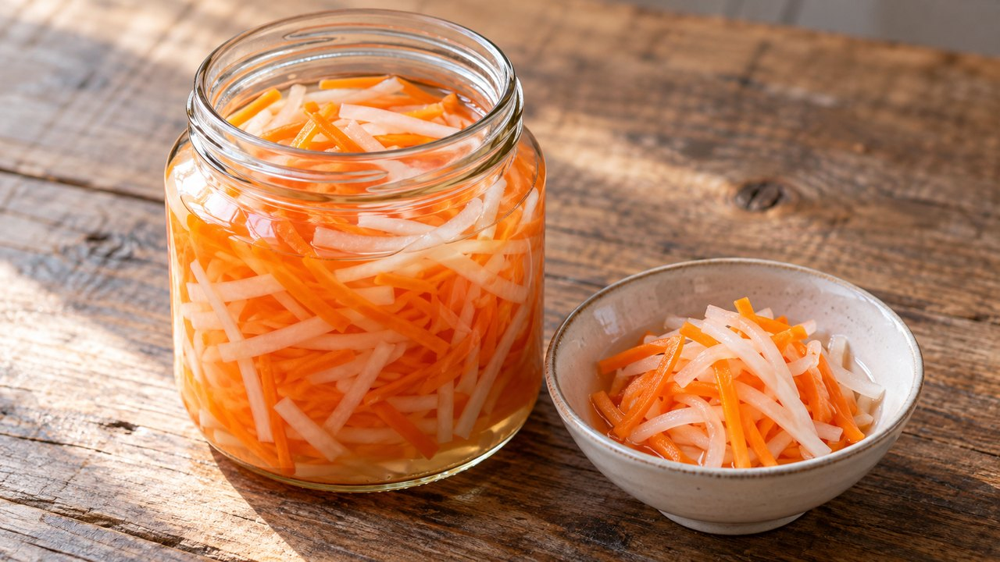

Refrigerator Carrot and Daikon Pickle
Vietnamese · Refrigerator pickling · About 25 min active prep; total estimate 24 hr 25 min including chilling. Follow the doneness endpoint rather than the clock.
Yield: About 2–3 pint containers; yield varies

Ingredients
- 8 oz carrots, peeled and cut into thin matchsticks
- 8 oz daikon radish, peeled and cut into thin matchsticks
- 1½ cups distilled white vinegar labeled 5% acidity
- 1½ cups water
- ¼ cup sugar
- 2 tsp canning or pickling salt
Directions
- Wash produce before peeling. Cut similar-size matchsticks so the texture is even; place in clean heat-safe containers.
- Bring vinegar, water, sugar and salt to a boil, stirring until dissolved.
- Pour over the vegetables, keeping them covered with brine. Divide into extra containers if needed rather than adding plain water.
- Refrigerate promptly in small containers and cover securely once chilled. Wait 24 hours for flavor; serve with bánh mì, grilled meats or rice bowls.
Notes & serving ideas
A Vietnamese-inspired refrigerator pickle, not a fermented or canned product. Use within 3 days as a conservative household practice. The planner reserves carrots only; the required 8 oz daikon is a separate ingredient.
Harvest reference batch: 8 oz carrots. Only this primary crop is deducted; secondary ingredients and finished yields are not calculated.
Use in Harvest Helper I made this → Add to pantry
Review & safe storage
Original recipe: Family Recipes culinary preparation informed by the references below; the exact formula and storage life have not been laboratory validated or kitchen-tested here. References do not validate it for canning.
Keep at 40°F (4°C) or below. Use within 3 days as a conservative household limit, not a tested shelf life. This recipe is not shelf-stable; do not can it or leave it out to ferment.
Work with clean hands, sound produce and clean equipment. Refrigerate prepared perishables promptly, within 2 hours (1 hour above 90°F / 32°C); cool hot mixtures in shallow small containers. Never thaw perishables on the counter.